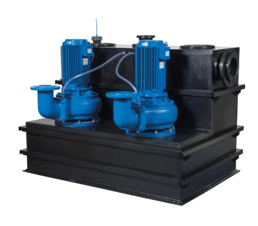
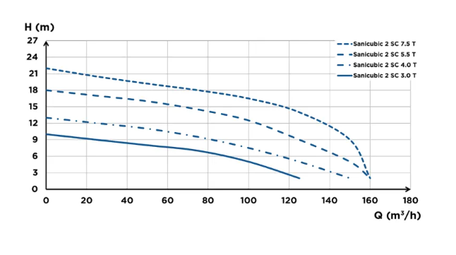
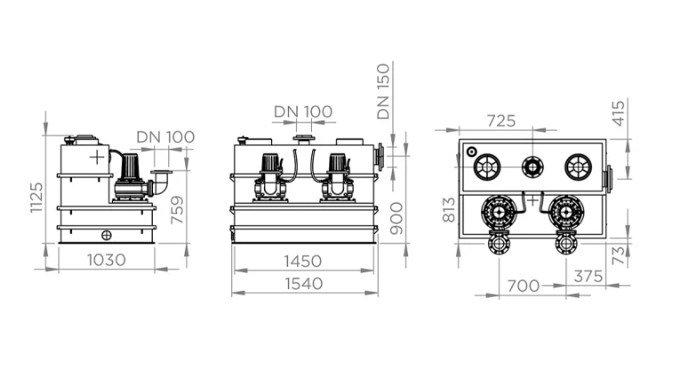

📞 032.347.0815~7
SFA KOREA 공식 대리점 1호 | 한국그런포스펌프(주) 프리미엄 공식 대리점 | 1995년 설립
✉ hyoilpump@daum.net
3상 이중 펌프 · 1,000L 대용량 탱크를 갖춘 공공건물·아파트 단지 전용 리프팅 스테이션.
3.0T~7.5T 4가지 버전으로 현장 규모에 맞게 선택할 수 있습니다.


| 공통 사양 (전 버전 동일) | |
| 전류 방식 | 3상 (Three-phase) |
| 전압 | 400 V |
| 주파수 | 50-60 Hz |
| 정격 회전수 | 1,400 rpm |
| 운전 모드 | S3 25% |
| IP 등급 | IP56 |
| 전기 등급 | Class I |
| 모터 절연 등급 | Class F |
| 전선 길이 | 3.5 m |
| 유압 공통 사양 | |
| 유입구 수 | 1개 (DN 150) |
| 토출구 직경 | DN 100 |
| 환기구 직경 | DN 100 |
| 전체 탱크 용량 | 1,000 L |
| 유효 용량 | 500 L |
| 최대 액체 온도 | 55°C (5분 이내) |
| 임펠러 타입 | 싱글 채널 |
| 수위 감지 | 공기압식 |
| 재질 | |
| 탱크 | 고밀도 폴리에틸렌 (HDPE) |
| 펌프 본체·모터·임펠러 | EN-GJL-200 (회주철) |
| 샤프트 | 스테인리스강 |
| 씰 | 카본/세라믹 |
| Sanicubic 2 SC 3.0T | |
| 소비 전력 P1 | 4,000 W × 2 |
| 출력 P2 | 3,000 W |
| 최대 전류 | 6.9 A |
| 최대 양정 | 10 m |
| 최대 유량 | 120 m³/h |
| 이물 통과 직경 | 80 mm |
| 컨트롤 박스 | ZPS 2 박스 |
| 총 중량 | 370 kg |
| EAN 코드 | 3308815079073 |
| 공장 코드 | CUBIC2SC3-0T |
| Sanicubic 2 SC 4.0T | |
| 소비 전력 P1 | 5,500 W × 2 |
| 출력 P2 | 4,000 W |
| 최대 전류 | 11.2 A |
| 최대 양정 | 13 m |
| 최대 유량 | 140 m³/h |
| 이물 통과 직경 | 80 mm |
| 컨트롤 박스 | ZPS 2 박스 |
| 총 중량 | 385 kg |
| EAN 코드 | 3308815079080 |
| 공장 코드 | CUBIC2SC4-0T |
| Sanicubic 2 SC 5.5T | |
| 소비 전력 P1 | 6,300 W × 2 |
| 출력 P2 | 5,500 W |
| 최대 전류 | 12.1 A |
| 최대 양정 | 18 m |
| 최대 유량 | 160 m³/h |
| 이물 통과 직경 | 100 mm |
| 컨트롤 박스 | ZPS 2 박스 |
| 총 중량 | 400 kg |
| EAN 코드 | 3308815079097 |
| 공장 코드 | CUBIC2SC5-5T |
| Sanicubic 2 SC 7.5T ★ 최고사양 | |
| 소비 전력 P1 | 8,700 W × 2 |
| 출력 P2 | 7,500 W |
| 최대 전류 | 16.9 A |
| 최대 양정 | 22 m |
| 최대 유량 | 165 m³/h |
| 이물 통과 직경 | 100 mm |
| 컨트롤 박스 | PS2 시스템 박스 (스타-델타 시동) |
| 총 중량 | 425 kg |
| 특이사항 | 스타-델타 시동 방식 적용 |
설치 현장의 유량·양정 조건에 따라 최적의 버전을 선택하세요. 7.5T는 대형 공공시설·아파트 단지 최대 규모에 적합합니다.
| 항목 | 3.0T | 4.0T | 5.5T | 7.5T ★ |
|---|---|---|---|---|
| 출력 P2 | 3,000 W | 4,000 W | 5,500 W | 7,500 W |
| 최대 전류 | 6.9 A | 11.2 A | 12.1 A | 16.9 A |
| 최대 양정 | 10 m | 13 m | 18 m | 22 m |
| 최대 유량 | 120 m³/h | 140 m³/h | 160 m³/h | 165 m³/h |
| 이물 통과경 | 80 mm | 80 mm | 100 mm | 100 mm |
| 컨트롤 박스 | ZPS 2 | ZPS 2 | ZPS 2 | PS2 시스템 |
| 시동 방식 | 직입 | 직입 | 직입 | 스타-델타 |
| 총 중량 | 370 kg | 385 kg | 400 kg | 425 kg |

대량의 폐수 처리가 필요한 대형 공공시설·집합 건물에 최적입니다.
사니큐빅 2 SC는 3상 400V 전원이 반드시 필요합니다. 단상 220V 환경에서는 사용할 수 없으며, 사전에 전원 공급 조건을 반드시 확인하세요.
7.5T 버전은 기동 전류를 줄이기 위해 스타-델타 시동 방식을 채택합니다. PS2 시스템 박스가 전기 캐비닛에 내장 제공되며, 전기 설비 전문가가 설치해야 합니다.
탱크 용량 확장(최대 20,000L), 유입구 수 추가, 설치 액세서리 옵션은 별도 주문 제작이 필요합니다. 효일종합상사로 사전 문의해 주세요.
대형 공공시설 설치 시 3개월마다 정기 점검을 권장합니다. 싱글 채널 임펠러와 탱크 내 이물질을 주기적으로 확인·청소하세요.
SFA KOREA 공식 대리점 1호 효일종합상사가 현장 규모에 맞는 최적의 버전과 설치 방안을 제안해 드립니다.